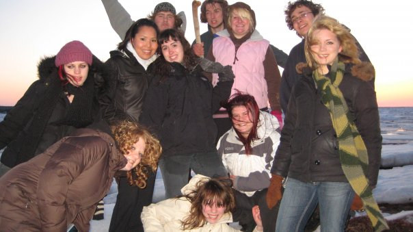
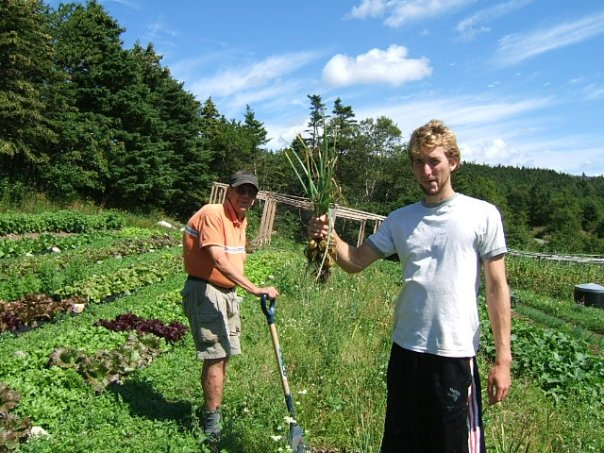
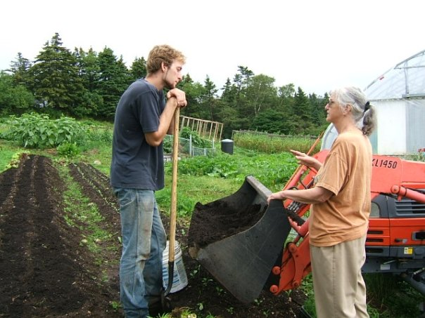
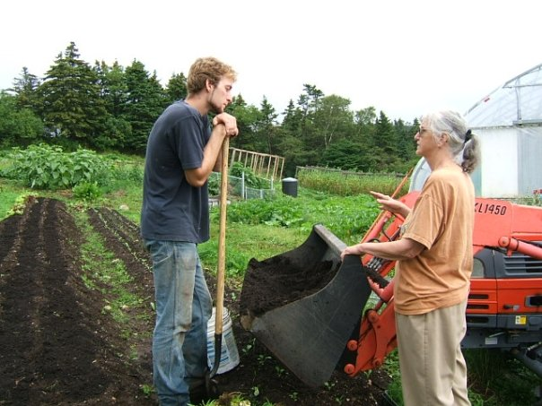
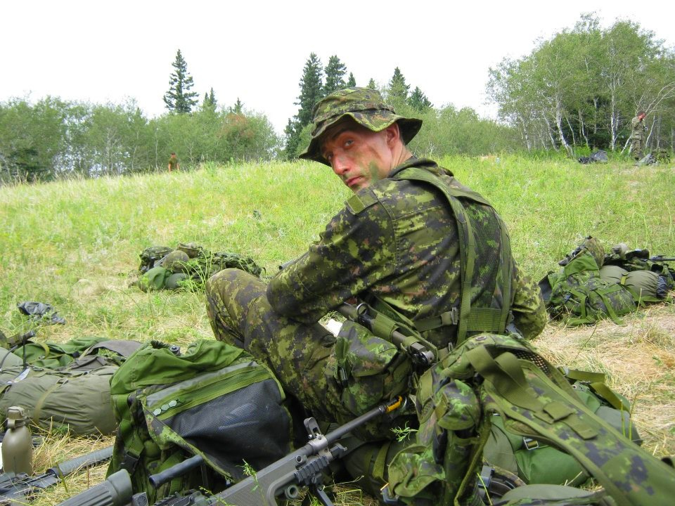

Biography

Nathanael Weir was born on June 6th, 1989 in Matsqui General Hospital in Matsqui, British Columbia, Canada. Two years before him his older sister Sarah was born, and three years after him his younger brother Jonathan was born. They lived in the tiny village of Matsqui, which later merged with Abbotsford city, and spent most of their young lives growing up there.
Katimavik
Immediately after graduating highschool, a Canadian Volunteer Organization called ‘Katimavik’ caught Nathanael’s interest. He signed up for a nine month program. During those nine months he lived with twelve different kids around his age from all over Canada, led by a project leader. The program was divided into 3 month segments, and during each segment they lived and volunteered in a different Canadian city chosen by Katimavik. They learned to live as a group, cook meals, take care of the house, organize excursions and events, and help out in the community. The first segment of three months Nathanael lived in Grande Prairie, Alberta; the second he lived in Quebec city, Quebec; and the third he lived in Tatamagouche, a tiny town on the northern coast of Nova Scotia.
WWOOF
After completing the Katimavik program Nathanael stumbled upon something called WWOOFing. From the west coast to the east Nathanael travelled between locations in every province and learned everything from raising animals and growing crops, to taking care of guests and running an accommodation establishment. Plus he got to see a lot of his country’s beauty.
It was through the Canadian program of Katimavik and the WWOOFing organization of Canada Nathanael learned the rewards of volunteer and work exchange in foreign lands, and the value of those experiences. He discovered a way to travel that was very different from any vacation; he found it was more fulfilling, and affordable.

{kind=link}
 

{kind=link}
Work
Nathanael moved through a lot of different jobs afterwards, from door to door salesman to construction worker. He has worked in residential construction, deck and fence building, landscaping, renovations, as a stable hand, as a groundskeeper, and as a janitor. Nathanael even joined the Canadian Forces Infantry Reserves for two years. No matter what he tried his longing to move on and try something new drove him, and he realized he needed to go out and see the world.
Travel
Nathanael loves many different types of outdoor activities such as hiking and camping. He enjoys travelling as much as possible, learning about different cultures and meeting new people. He has travelled and lived in every province in the great expanse of his home country, Canada.
In July 2010 he enjoyed a month in Iceland, camping and hiking all along the southern shore, and then Australia/New Zealand in June 2012. From 2013 to 2015 Nathanael travelled to 36 different countries around Europe with his girlfriend Ashleigh. Together they started a blog called 'The Incredibly Long Journey' detailing their amazing trip. It's only a matter of time before they take off again on another adventure.
| MONTH | 2013 | 2014 | 2015 |
|---|---|---|---|
| January | Finland England |
Slovakia Ukraine Romania |
|
| February | England Scotland |
Romania | |
| March | Scotland | Bosnia Croatia |
|
| April | Scotland Ireland Wales England Czech |
Croatia Slovenia Italy Germany |
|
| May | Czech Poland Lithuania |
Germany Italy Greece |
|
| June | Latvia Estonia Finland |
Greece Albania Macedonia |
|
| July | Finland Turkey |
Germany Netherlands Belgium France Spain |
|
| August | Turkey Bulgaria |
Morocco Portugal |
|
| September | Bulgaria | ||
| October | Norway | Bulgaria Montenegro Serbia Hungary |
|
| November | Norway Sweden Denmark |
Hungary Slovenia |
|
| December | Denmark Sweden Finland |
Slovenia Austria Czech Slovakia |